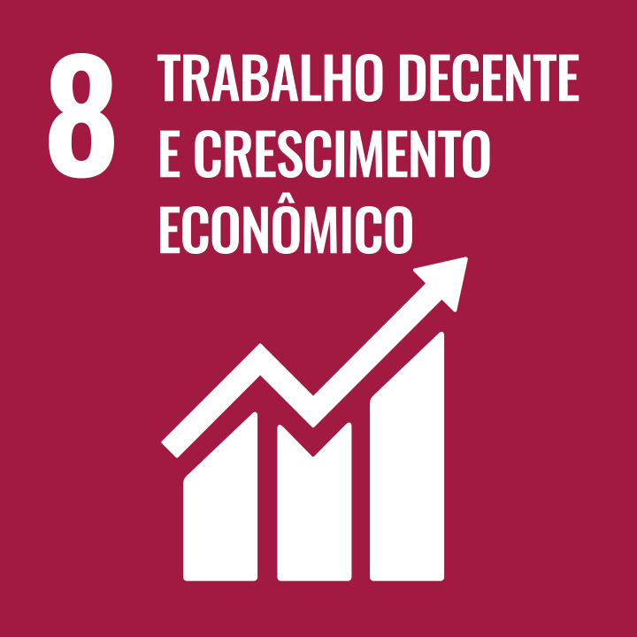

Estudante de Engenharia de Computação na UTFPR, com conhecimentos em programação,
banco de dados, metodologias ágeis e inglês avançado. Experiência em atividades acadêmicas
e extracurriculares, com perfil proativo e organizado.
ODS que pretendo contribuir

Formação Acadêmica
Engenharia de Computação
Universidade Tecnológica Federal do Paraná (UTFPR) – Câmpus Cornélio Procópio
Início: abril/2022 | Previsão de conclusão: dezembro/2026
Habilidades
Java
MySQL
Metodologias Ágeis
GitHub
Idiomas
Português – Nativo
Inglês – Nível C1 (Avançado)
Experiência Extracurricular
Diretora de Modalidades Coletivas Femininas | AAAE XV de Março
Julho/2024 – Atualmente
Coordena atividades esportivas coletivas femininas, treinos, convocação e calendário esportivo.
Estagiária de Patrimônio | AAAE XV de Março
Março/2024 – Julho/2024
Responsável pela gestão e manutenção do patrimônio da atlética.
Cursos
Java POO
Curso em Vídeo – 40 horas – Concluído em junho/2023
HTML5 e CSS3: Módulo 1 de 5
Curso em Vídeo – 40 horas – Concluído em março/2023